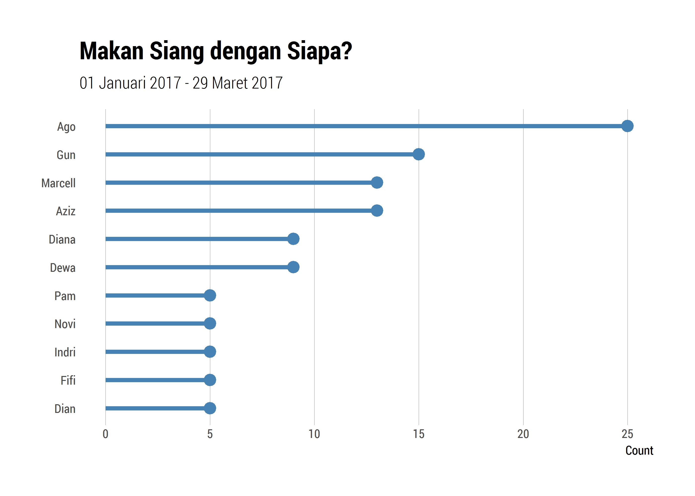
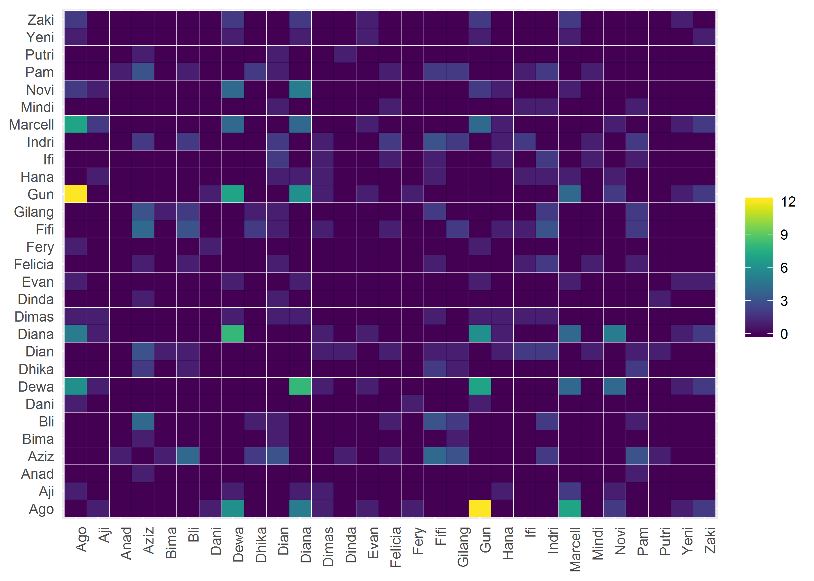
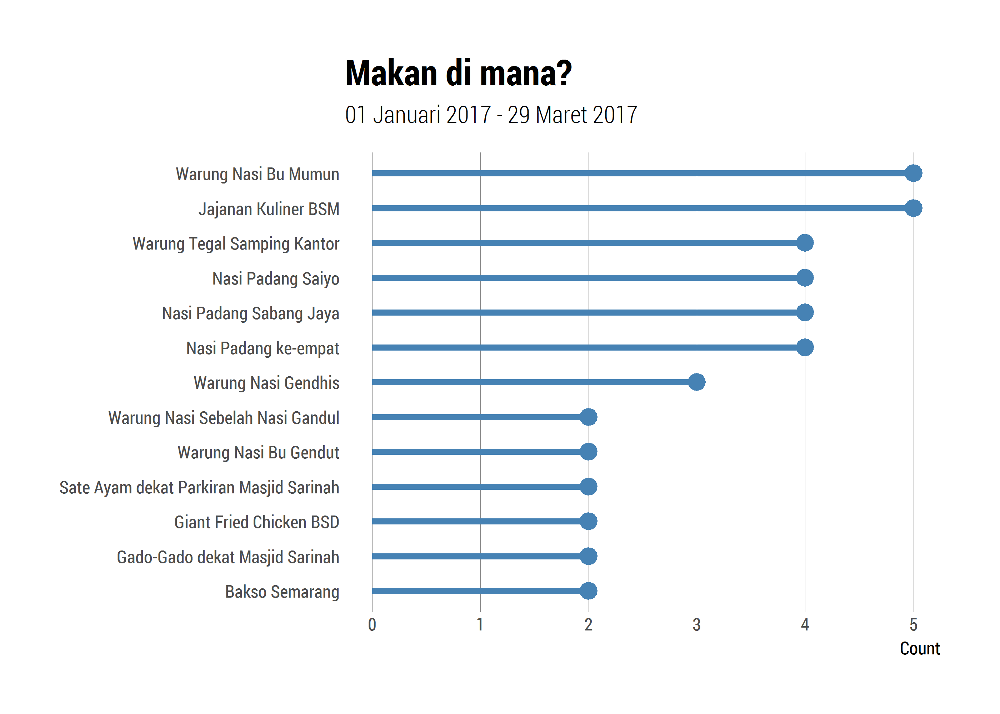
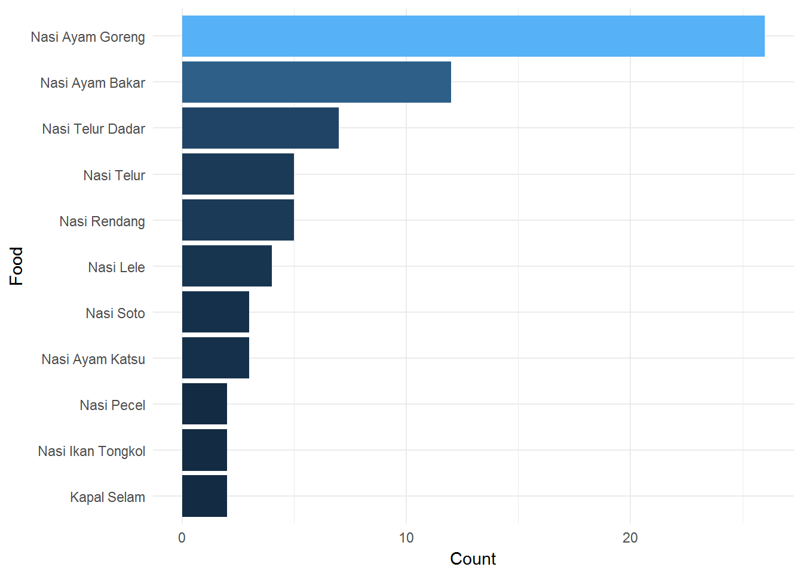
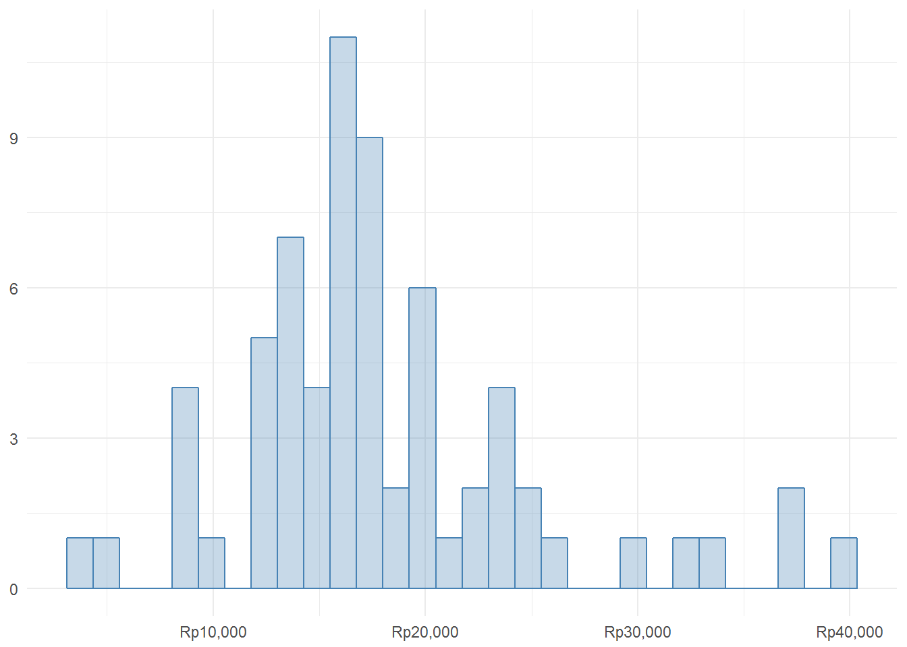
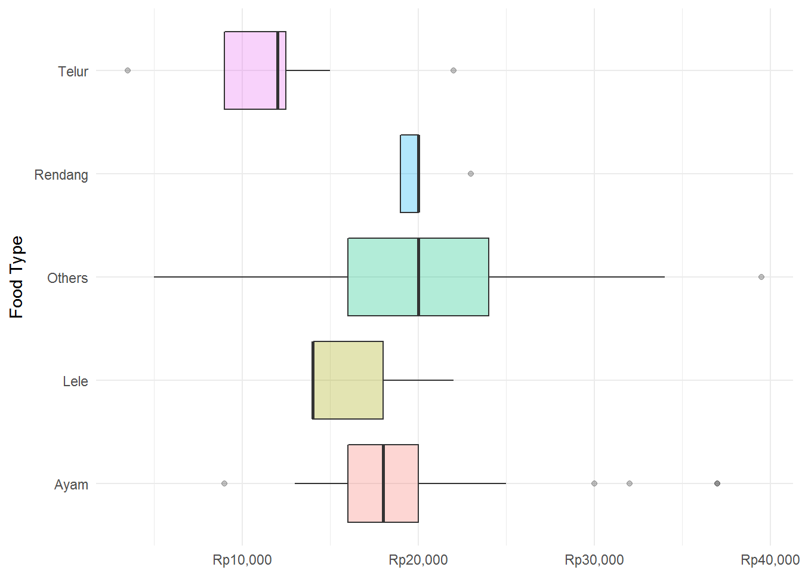

In this session, I would like to visualize my lunch data which start to be recorded in 2017. There are four main questions regarding to my lunch data such as:
library(tidyverse)
library(readxl)
library(knitr)
library(lubridate)
library(ggalt)
library(extrafont)
library(formattable)
library(hrbrthemes)
library(viridis)
loadfonts()
df <- read_excel(paste0(datadir, "/transaction.xlsx"), sheet = "lunch")
df <- df %>% mutate(day = wday(date, label = T),
daytype = ifelse(day %in% c("Sat", "Sun"), "Weekend", "Weekday"))
ref <- read_excel(paste0(datadir, "/transaction.xlsx"), sheet = "holiday")
ref <- ref %>% select(date, holiday) %>% filter(!is.na(holiday))
gr <- read_excel(paste0(datadir, "/transaction.xlsx"), sheet = "group")
df <- df %>% mutate(daytype = ifelse(date %in% ref$date, "Holiday", daytype))
sample_n(filter(df, price>0, with!="-"), 10) %>%
select(Food=food, Place=place, Price=price, Day=day) %>%
mutate(Price=currency(Price, "Rp", format="d")) %>%
formattable(list(Price=color_tile("white","orange"),
Day=formatter("span",style=x~ifelse(x %in% c("Sat","Sun"),
style(color="green",font.weight="bold"), NA))
)
)| Food | Place | Price | Day |
|---|---|---|---|
| Kapal Selam | Cawan Putih | Rp26,000 | Wed |
| Bakmi | Mister Bakso Sarinah | Rp23,000 | Tues |
| Bakso Campur | Bakso Malang | Rp25,000 | Fri |
| Nasi Ayam Bakar | Nasi Padang Saiyo | Rp18,000 | Tues |
| Nasi Gado-Gado | Gado-Gado dekat Masjid Sarinah | Rp16,000 | Mon |
| Mi Ramen | Food Court Lantai Bawah AEON BSD | Rp39,500 | Fri |
| Yamin Komplit | Bakso Semarang | Rp21,000 | Thurs |
| Lontong Sate Ayam | Sate Ayam dekat Parkiran Masjid Sarinah | Rp18,000 | Thurs |
| Nasi Telur Dadar | Nasi Padang Sabang Jaya | Rp12,000 | Thurs |
| Nasi Lele | Jajanan Kuliner BSM | Rp14,000 | Fri |
The first question is “With whom I have lunch?” or in Bahasa it means “Makan siang dengan siapa?”
df_unnest <- df %>%
filter(!grepl("Family|Wak", with), daytype == "Weekday") %>%
select(date, food, price, with) %>%
mutate(with = strsplit(as.character(gsub(" ", "", with)), ",")) %>%
unnest(with)
df_unnest_with <- df_unnest %>% group_by(with) %>%
summarise(n = n(), n_real = sum(ifelse(price > 0, 1, 0)), avg_price = mean(price[price>0])) %>%
arrange(desc(n))
df_unnest_with %>%
filter(with != "-") %>%
top_n(10, n) %>%
ggplot(aes(n, reorder(with, n))) +
geom_lollipop(horizontal = T, size=1.5, color="steelblue") +
labs(x="Count", y=NULL, title="Makan Siang dengan Siapa?",
subtitle=paste(format(min(df$date), "%d %B %Y"), "-", format(max(df$date), "%d %B %Y"))) +
theme_ipsum_rc(grid="X")
df_comb <- df %>%
filter(!grepl("Family|Wak", with), daytype == "Weekday", with != '-') %>%
# mutate(with = paste0(with, ", Edo")) %>% # include me
mutate(id = row_number(date)) %>%
select(id, with) %>%
mutate(with = strsplit(as.character(gsub(" ", "", with)), ",")) %>%
unnest(with)
df_comb <- df_comb %>%
mutate(with2 = with) %>%
group_by(id) %>%
expand.grid() %>%
distinct() %>%
inner_join(df_comb) %>%
inner_join(df_comb, by=c("with2"="with", "id"="id")) %>%
filter(with!=with2)
df_comb %>%
tidyr::expand(with, with2) %>%
left_join(
df_comb %>%
group_by(with, with2) %>%
summarise(n = n())
) %>%
mutate(n = ifelse(is.na(n), 0, n)) %>%
ggplot(aes(with, with2)) +
geom_tile(aes(fill = n), color = "white") +
theme(axis.text.x = element_text(angle=90, hjust=1)) +
theme(axis.ticks=element_blank()) +
labs(x=NULL, y=NULL) +
scale_fill_viridis(name=NULL)
df_comb_grouped <- df_comb %>% group_by(with, with2) %>%
tally(sort=T)
library(visNetwork)
nodes <- df_comb_grouped %>%
group_by(with) %>% summarise(n = n()) %>% arrange(desc(n)) %>%
mutate(id=with, label=with, value=n, font.size=value*2) %>% select(-with, -n) %>%
inner_join(gr)
edges <- df_comb_grouped %>%
select(from=with, to=with2)
visNetwork(nodes, edges, width='800px', height='400px') %>%
visLayout(randomSeed = 123)It is interesting to look at the network visualization of with whom I had lunch. There are two disparate groups seen from that network visualization with two nodes in the arch between those two groups. The size of the nodes indicates the number of degrees that someone have lunch with, under the assumption that it only counts when I have lunch with them.
The second question is “Where do I have lunch?” or in Bahasa it means “Makan siang di mana?”
df %>%
filter(!grepl("Family|Wak Jam", with), daytype == "Weekday") %>%
group_by(place) %>%
summarise(n = n()) %>% top_n(10, n) %>%
ggplot(aes(n, reorder(place, n))) +
geom_lollipop(horizontal = T, size=1.5, color="steelblue") +
labs(x="Count", y=NULL, title="Makan di mana?",
subtitle=paste(format(min(df$date), "%d %B %Y"), "-", format(max(df$date), "%d %B %Y"))) +
theme_ipsum_rc(grid="X")
The third question is “What is the food for the lunch?” or in Bahasa it means “Makan siang apa?”
df_food <- df %>%
select(food, price) %>%
mutate(type = ifelse(grepl("Nasi", food), "Nasi", "Bukan Nasi")) %>%
mutate(sup = case_when(grepl("Nasi Ikan, Ayam, Daging", .$food) ~ "Others",
grepl("Ayam", .$food) ~ "Ayam",
grepl("Telur", .$food) ~ "Telur",
grepl("Lele", .$food) ~ "Lele",
grepl("Rendang", .$food) ~ "Rendang",
TRUE ~ "Others"))
df_food %>%
group_by(type) %>%
summarise(n = n()) %>%
mutate(p = round(n/sum(n), 2)) %>%
arrange(desc(n)) %>%
kable(col.names = c("Food Type", "Count", "Percentage")) | Food Type | Count | Percentage |
|---|---|---|
| Nasi | 78 | 0.89 |
| Bukan Nasi | 10 | 0.11 |
df_food %>%
group_by(food) %>%
summarise(n = n()) %>%
arrange(desc(n)) %>%
filter(n != 1) %>%
ggplot(aes(reorder(food, n), n, fill=n)) +
geom_bar(stat="identity") + theme_minimal() +
xlab("Food") + ylab("Count") + coord_flip() + guides(fill=F)
The fourth question is “How much the food cost for the lunch?” or in Bahasa it means “Berapa biaya makan siang?”
df_food %>% filter(price > 0) %>%
ggplot(aes(price)) +
geom_histogram(alpha=.3, color="steelblue", fill="steelblue") +
theme_minimal() + xlab("Price") + ylab("Density") +
scale_x_continuous(labels = scales::comma) +
scale_x_continuous(labels = scales::dollar_format(suffix = "", prefix = "Rp")) +
labs(x=NULL, y=NULL)
df_food %>% filter(price > 0) %>%
ggplot(aes(sup, price, fill=sup)) +
geom_boxplot(alpha=.3) +
theme_minimal() + xlab("Food Type") + ylab("Price") +
coord_flip() +
scale_y_continuous(labels = scales::comma) +
scale_y_continuous(labels = scales::dollar_format(suffix = "", prefix = "Rp")) +
guides(fill=F) + labs(y=NULL)